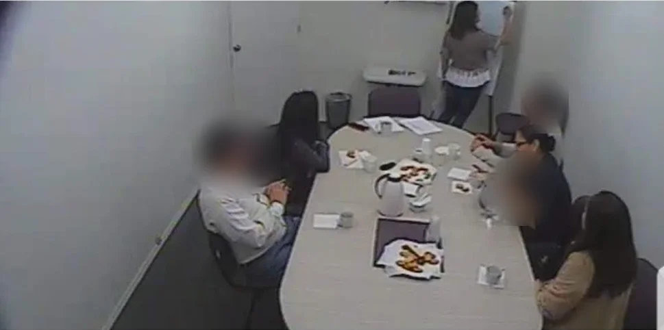
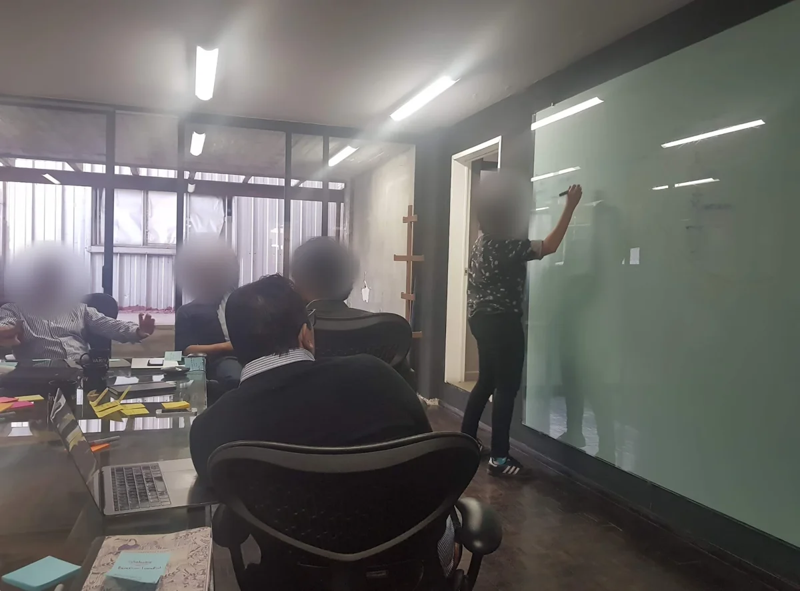
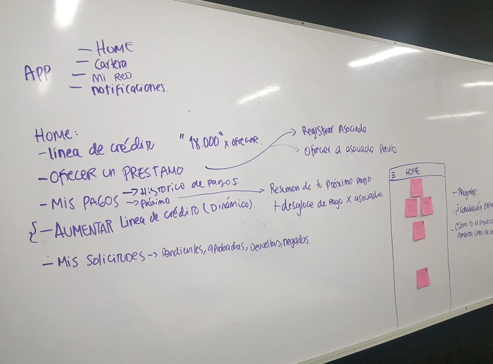
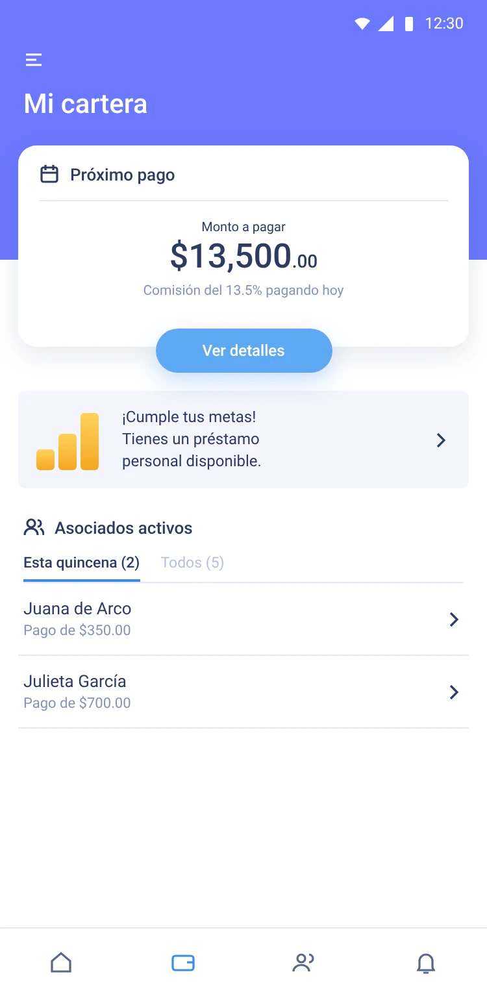
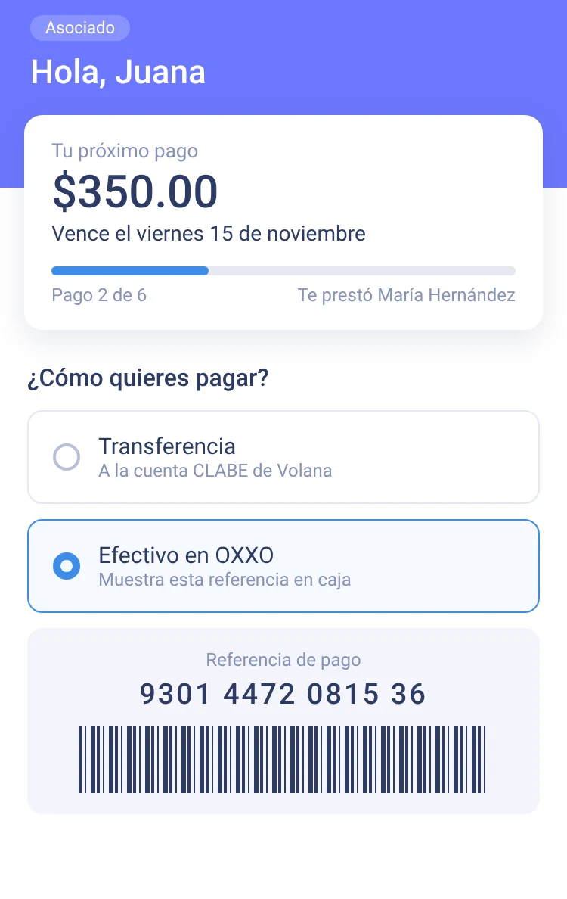
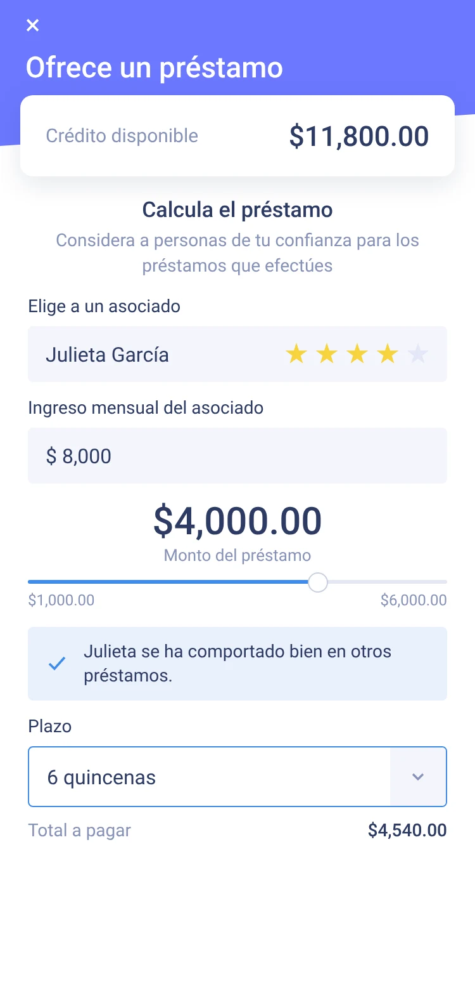
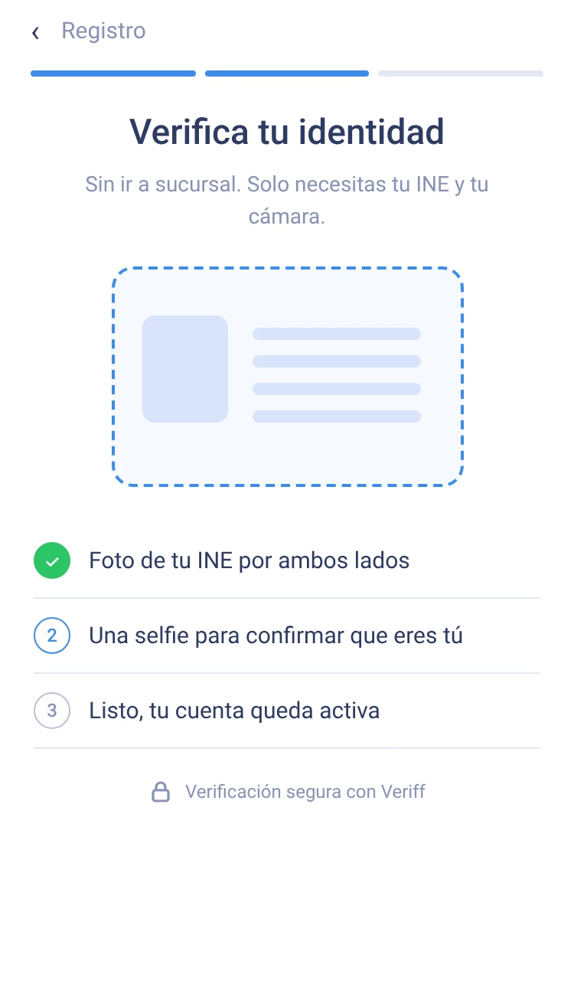

How Julieta stopped carrying her circle’s cash across town
Julieta borrowed from Volana and lent that money to people she trusted, her credit circle. Every fortnight she rode the bus from house to house to collect their payments, then carried the cash to the branch. Volana’s app let her and her associates sign up, track and pay their loans without that trip, by bank transfer or in cash at stores like Walmart or Soriana.
My role
As Lead UI Designer, I defined the visual style, built the UI kit, designed the information architecture and the loan request and admin flows, and managed the design backlog.
Impact
Less cash on the street. Lenders and associates paid by transfer or at a store, instead of carrying cash across town.
Sign-up without a branch. Photos of the INE and proof of address, checked with Veriff.
More ways to pay. Transfers, deposits at several banks, and cash at Walmart, Bodega Aurrera, Soriana or La Comer.
Growth on both sides. Medá gained Volana’s portfolio; Volana’s customers gained Medá’s wallet, with points and cashback.
JG
Julieta García
Lender in a Volana credit circle
Her fortnight
Collects payments from her associates and pays Volana back, in cash.
Works with
Her circle of associates, people she knows, and Volana’s branch staff.
Needs
To lend to people she trusts, know who has paid, and pay back without carrying cash across town.
Composite persona, based on the focus group with Volana’s branch customers.
02. The challenge
Every payment was a trip with cash
The risk wasn’t one trip. It was a daily route.
Volana lent around MXN 20,000 to one person, like Julieta, who shared it with people they trusted: their credit circle of associates. That lender then collected each payment themselves. Some spent the whole day on public transport, picking up cash from their associates and a new associate’s documents to sign them up at the branch.
Why digital
The circles worked: people lent to people they knew, and they paid. What didn’t scale was the branch. Every new customer meant a visit, papers and staff, and Volana only reached as far as its branches in Estado de México. Polygon Fintech, which already ran the Medá wallet, acquired Volana to grow it without opening more branches. The app was how.
The problem
How might we keep lenders and their associates safe, and let new people join, without anyone carrying cash or documents across town?
The constraints we designed within
A credit line, not a loan
Each lender had a line from Volana, around MXN 20,000. They could only lend within it, Volana reviewed every loan to an associate, and lenders could ask for a bigger line.
Identity on paper
Everyone who joined showed both sides of their INE and a proof of address. In the app, Veriff checked them, so nobody carried them to a branch.
Money that moves at two speeds
Bank transfers showed up at once. Cash paid at a store took up to 24 hours, so for a day a lender could see as unpaid an associate who had already paid.
Online only at home
Most people had little or no mobile data on the street. Anything that needed a download or a video had to wait until they were home, on Wi-Fi.
Taught in person
Every lender’s onboarding included a live, in-person training. At sign-up they picked a day and time, and got their questions answered there.
Risk held by people
The credit line capped what anyone could owe, the circle meant lending to people you know, and every loan got Volana’s review and, at the end, a rating.
03. Process
Listen first, then test it in their hands

01. Focus group
Hear it from the branch.
We started with a focus group with Volana’s branch customers, led by a moderator while I followed it over a live stream. That’s where we heard about the all-day routes with cash and documents.

02. Workshops
Agree on what’s viable.
I led workshops with developers, legal and sales to decide what each feature needed and what we could build. Out of them came the app’s structure and the flows I designed.
03. Testing
Put it in their hands.
We tested high-fidelity prototypes in person, in rounds, before development. Most people only went online at home, on Wi-Fi. That stopped a proposal to put QR codes in partner stores with the download and video tutorials: without data, nobody would watch them there.
Julieta’s journey before the app
Lending felt good. Collecting hurt.
The worst moments were the ones that moved cash and papers across town, not the ones that rested on trust. This is what came out of the focus group: each step of the process as it happened on paper and in person, what it needed from Julieta, and how it felt.
NeedFeelingPain point
Get the line
01 Apply at the branch
Need
Get a credit line to lend to her circle.
Feeling
😮💨Tired
Pain point
A trip with her own INE and proof of address, and forms to fill in at the branch.
02 Wait for approval
Need
Know whether, and how much, she can lend.
Feeling
😬Anxious
Pain point
No way to check but calling or going back.
Build the circle
03 Sign up an associate
Need
Add someone she trusts to her circle.
Feeling
😟Worried
Pain point
Carrying the new associate’s IDs and papers to the branch by bus.
04 Offer a loan
Need
Decide how much to lend, and to whom.
Feeling
🙂Confident
Pain point
Only memory and word of mouth to judge who pays well.
Collect and repay
05 Collect
Need
Get each associate’s payment on time.
Feeling
😩Exhausted
Pain point
A whole day on public transport, house to house, carrying cash.
06 Pay back
Need
Pay Volana before the due date.
Feeling
😰Anxious
Pain point
Another trip to the branch with all the cash collected.
Close and grow
07 Close the loan
Need
Close it, and decide whether to lend again.
Feeling
😌Relieved
Pain point
No record of who paid well to carry into the next loan.
08 Ask for more
Need
A bigger line, to lend to more people.
Feeling
🤞Hopeful
Pain point
Another visit to the branch just to ask.

The app’s first structure, drafted in a workshop: Home, Wallet, My network and Notifications, and everything Home had to hold.
Two paths through the same loan
Same lender, same circle. Five steps instead of eight, and none of them on a bus.
Same start
Decide to lend to her circle
Pick the people she trusts
With the app
Sign up and verify from home
Offer loans, ratings in view
Associates pay from anywhere
See who paid, pay by transfer
Close, rate, ask for more
At the branch
Take her papers to the branch
Wait for approval
Bring her associates’ papers in
Offer loans from memory
Collect by bus, house to house
Carry the cash to the branch
Close with no record
Go back to ask for more
04. Key decisions
Change the trip, keep the habit
Each one traces back to something we heard in the focus group, agreed in a workshop or saw in a test.
01. One app, two roles
The lender tracks, the associate pays.
Lenders and associates used the same app and signed in by role, because they needed different things. The lender needed to see who had paid and what was still owed. The associate needed to know how much and when, and a way to pay without a trip.
So the lender’s wallet opens on their next payment to Volana, with the associates who owe this fortnight below it. The associate’s home opens on what they owe, and two ways to pay: a bank transfer or deposit, or cash at Walmart, Bodega Aurrera, Soriana or La Comer with a barcode. Not everyone used a bank account, so cash had to stay an option, and the screen says when each payment shows up: at once, or within 24 hours.
Based on Focus groups


02. Make trust visible
A track record you see when you lend, and build when you pay.
Volana’s loans already ran on trust between people who know each other. The app didn’t replace that judgment; it backed it up with history.
When Julieta offers Mariana a loan, she sees Mariana’s rating and whether she’s paid well before. When the loan closes, Julieta rates her, and that rating becomes part of Mariana’s history. We used behavioral economics here: paying on time builds a reputation people can see.
Based on Focus groups · Behavioral economics

Continuar
Cerrar asociadoCancelar
03. Remove the branch from sign-up
No documents carried anywhere.
Everyone who joined, lender or associate, verified their identity in the app with Veriff: a photo of their INE and a selfie. Branch staff uploaded existing customers’ data beforehand, so they only had to confirm it.
The trip with someone else’s papers, the riskiest part of signing up, disappeared.
Based on Legal requirements

Tomar selfie
Screens recreated from the 2019 designs.
05. Outcome
Cash off the street, and a way to grow
The riskiest parts of a loan, signing up and paying, left the street.
Julieta no longer spent a day on the bus collecting, and new associates joined from their own phones instead of handing her their papers. Payments could go in by transfer, by deposit at several banks, or in cash at the stores people already shopped in.
For Polygon, it was the growth the acquisition was for: Volana’s portfolio moved into Medá, and Volana’s customers got Medá’s wallet, where everyday operations earned points and generous cashback. I moved to a new role soon after the first release, so I didn’t see the longer-term numbers.
What came next
Open the circles: after building a history, associates could join other circles and, later, offer loans themselves.
06. Reflection
Measure the change, not just the download
Define success first
We tracked adoption only. I’d agree on digital payments, on-time rate and trips avoided before designing.
Design for the 24-hour gap
Cash took up to a day to show. I’d show “paid at a store, shows within 24 hours” so a lender never chases someone who already paid.
Reach people without the app
Not everyone needs it. I’d let associates pay from a WhatsApp or SMS reference, and keep reminders short: amount and date, their usual way to pay, and a note when a cash payment is on its way.
Motivate, don’t expose
On-time payers earned a rating. I’d test that it never shames people who are late, or pushes anyone to borrow beyond their means.